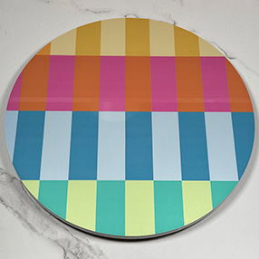

Channel Resources
From my OG channel circle to my new branding today, I have used a lot of different assets and products to get here.
This is where you'll all the resources I use so you can see how my videos get made!
What I use to make my videos
The infamous turntable! You may have noticed this turntable in nearly all my videos and shorts. It is a staple of my channel that started back in the Summer of 2024. I found it at Target in the lower-priced section of items. I would highly suggest something like this or a stand if you are planning on showing off smaller items in videos like minifgures!
This is the camera that I use to film the vast majority of my videos. If you want to film 4K video with better clarity than your typical iPhone, I would highly suggest upgrading to something like this. The Canon 90D is a DSLR camera so it also excels in photo quality too. If you are looking for something for just video, I would suggest checking out a mirrorless option that will be much lighter weight and a bit more portable.
This is the camera that I use to film the vast majority of my videos. If you want to film 4K video with better clarity than your typical iPhone, I would highly suggest upgrading to something like this. The Canon 90D is a DSLR camera so it also excels in photo quality too. If you are looking for something for just video, I would suggest checking out a mirrorless option that will be much lighter weight and a bit more portable.